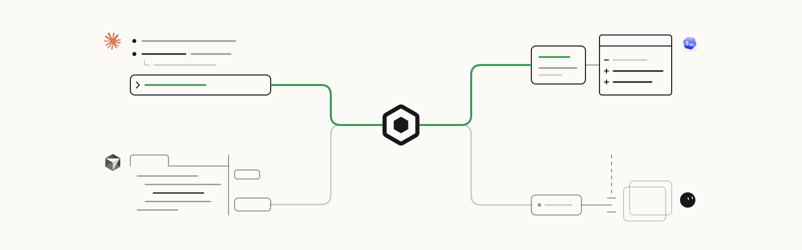
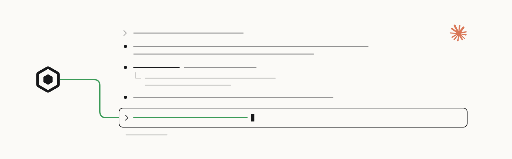
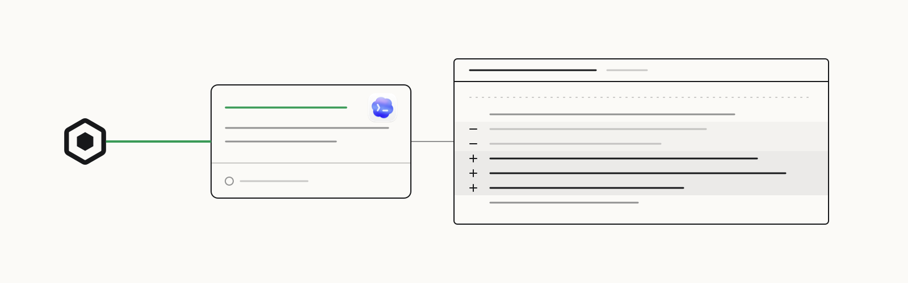
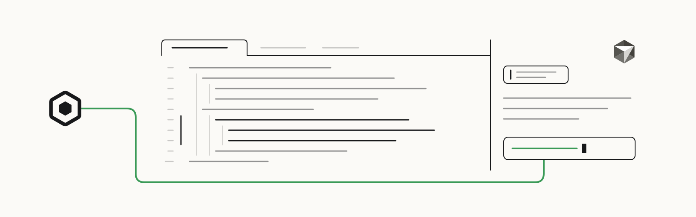
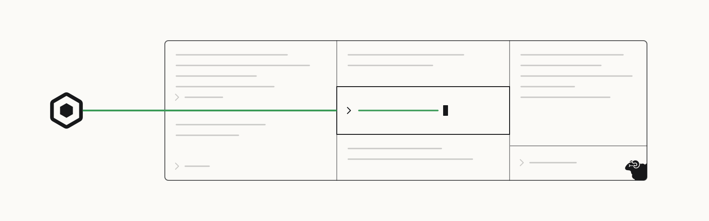
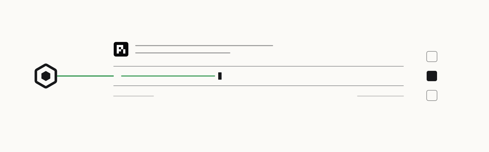
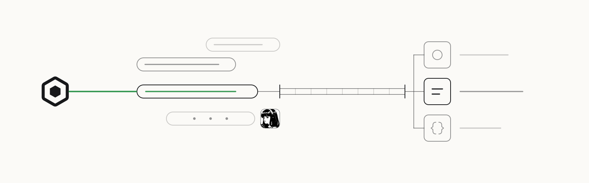
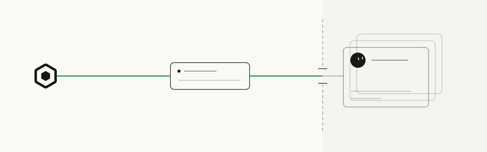
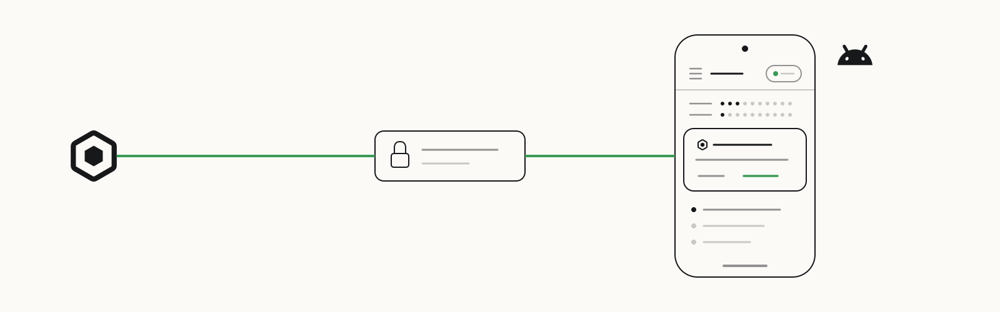

Scout / Documentation / Illustrations
One family. Nine distinct surfaces.
Thin line drawings shaped by each host: a terminal transcript, a code review, an editor selection, tiled panes, a minimal prompt, a tool bridge, a hosted gateway, and a paired phone.
Theme
Width
Scout
oscout/scout

One local broker connects work across your coding-agent tools.
Claude Code
oscout/claude-scout

Ask from Claude Code and receive Scout messages in the same session.
Codex
oscout/codex-scout

Request a review, follow its result, and continue the same work.
Cursor
oscout/cursor-scout

Bring Scout coordination into the editor through MCP.
Herdr
oscout/herdr-scout

Ask from a terminal pane and keep the Scout feed beside your work.
pi
oscout/pi-scout

Add Scout tools to a minimal terminal-agent session.
Hermes
oscout/hermes-scout

Reach Scout tools from a Hermes conversation.
Grok Bot
oscout/grok-scout

Reach your local coding agents through the hosted gateway and an online bridge.
Android
oscout/scout-android

Your agents in your pocket: approve a permission request without leaving the notification.